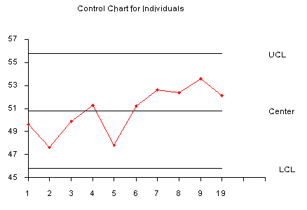

|
6.
Process or Product Monitoring and Control
6.3. Univariate and Multivariate Control Charts 6.3.2. What are Variables Control Charts?
|
|||||||||||||||||||||||||||||||||||||||||||
| Samples are Individual Measurements | |||||||||||||||||||||||||||||||||||||||||||
| Moving range used to derive upper and lower limits |
Control charts for individual measurements, e.g., the sample
size = 1, use the moving range of two successive observations
to measure the process variability.
The moving range is defined as $$ MR_i = |x_i - x_{i-1}| \, , $$ which is the absolute value of the first difference (e.g., the difference between two consecutive data points) of the data. Analogous to the Shewhart control chart, one can plot both the data (which are the individuals) and the moving range. |
||||||||||||||||||||||||||||||||||||||||||
| Individuals control limits for an observation | For the control chart for individual measurements, the lines plotted are: $$ \begin{eqnarray} UCL & = & \bar{x} + 3\frac{\overline{MR}}{1.128} \\ \mbox{Center Line} & = & \bar{x} \\ LCL & = & \bar{x} - 3\frac{\overline{MR}}{1.128} \, , \end{eqnarray} $$ where \(\bar{x}\) is the average of all the individuals and \(\overline{MR}\) is the average of all the moving ranges of two observations. Keep in mind that either or both averages may be replaced by a standard or target, if available. (Note that 1.128 is the value of \(d_2\) for \(n = 2\). | ||||||||||||||||||||||||||||||||||||||||||
| Example of moving range |
The following example illustrates the control chart for individual
observations. A new process was studied in order to monitor flow
rate. The first 10 batches resulted in
|
||||||||||||||||||||||||||||||||||||||||||
| Limits for the moving range chart | This yields the parameters below. $$ \begin{eqnarray} UCL & = & \bar{x} + 3\frac{\overline{MR}}{1.128} = 50.81 + 3\frac{1.8778}{1.128} = 55.8041 \\ & & \\ & & \\ \mbox{Center Line} & = & \bar{x} = 50.81 \\ & & \\ LCL & = & \bar{x} - 3\frac{\overline{MR}}{1.128} = 50.81 - 3\frac{1.8778}{1.128} = 45.8159 \, . \end{eqnarray} $$ | ||||||||||||||||||||||||||||||||||||||||||
| Example of individuals chart |
The control chart is given below
 The process is in control, since none of the plotted points fall outside either the \(UCL\) or \(LCL\). |
||||||||||||||||||||||||||||||||||||||||||
| Alternative for constructing individuals control chart |
Note: Another way to construct the individuals chart is by
using the standard deviation. Then we can obtain the chart from
$$ \bar{x} \pm 3s/c_4 \, .$$
|
||||||||||||||||||||||||||||||||||||||||||